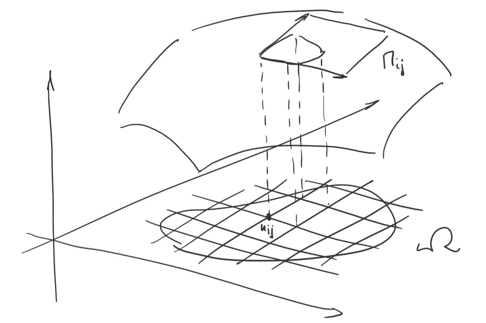

Теорема: Пусть \(\mathbf{f} = \{f_j(\mathbf{x})\}_{i = 1}^n = \{f_j(x_1, \ldots, x_n)\}_{i = 1}^n\), где каждая \(f_j \in C(\Omega), \,\,\,\, \Omega \subset \mathbf{R}^n\) выпукла. Обозначим \(\gamma_{AB}\) кривую, соединяющую точки \(A\) и \(B\). Тогда для любых точек \(A, B \in \Omega\) интеграл \(\displaystyle\int\limits_{\gamma_{AB}} f_1dx_1 + f_2dx_2 + \ldots + f_ndx_n\) не зависит от кривой \(\iff \exists u(\mathbf{x}) \in C^1(\Omega)\), такая, что \(du = f_1dx_1 + f_2dx_2 + \ldots + f_ndx_n\).
Доказательство:
Определение: Пусть \(\Omega \subset \mathbf{R}^2\) – замкнутая и ограниченная область с площадью границы \(0\). Пусть \(\mathbf{\varphi}: \Omega \to \mathbf{R}^n, \,\,\,\, \mathbf{\varphi}((u, v)) = (x_1(u, v), \ldots, x_n(u, v)), \,\,\,\, n \geqslant 3, \,\,\,\, \mathbf{\varphi} \in C^1(\Omega)\) ранг матрицы Якоби \(\mathbf{\varphi}\) равен \(2\) в каждой точке (максимально возможный ранг). Тогда \(\Phi = \mathbf{\varphi}(\Omega) \subset \mathbf{R}^n\) – гладкая невырожденная поверхность, \(\mathbf{\varphi}\) – параметризация поверхности.
Определение: Пусть \(\Omega \subset \mathbf{R}^2\) – замкнутая и ограниченная область с площадью границы \(0\). \(\mathbf{\varphi}\) – параметризация \(\Omega\).
Рассмотрим разбиение \(\Omega\) прямоугольной сеткой (обозначим разбиение \(\mathcal{T}\)), пусть \(\{\Omega_{i, j}\}_{i, j = 1}^{N}\) – прямоугольники, целиком лежащие в \(\Omega\). Пусть \(x_{ij} = (u_i, v_j)\) – «левый нижний» угол прямоугольника \(\Pi_{ij}\). Пусть \(\Pi_{ij}\) – параллелограмм в \(\mathbf{R}^n\), образованный векторами \((\frac{\partial x_1}{\partial u}, \ldots, \frac{\partial x_n}{\partial u})_{|(u_i, v_j)}\Delta u_i\) и \((\frac{\partial x_1}{\partial v}, \ldots, \frac{\partial x_n}{\partial v})_{|(u_i, v_j)}\Delta v_i\) (касательные к поверхности вектора в точке \(\mathbf{f}(u_i, v_i)\) с длинами равными сторонам прямоугольника \(\Pi_{ij}\)). Диаметр \(d\) разбиения – это \(\max_{i, j}\{\Delta u_i, \Delta v_j\}\). Если \(\exists \displaystyle \lim_{d\to 0}\displaystyle \sum_{i, j = 1}^{N}\mu(\Pi_{ij}) = S(\Phi)\), то \(S(\Phi)\) – площадь поверхности.

Замечание: Так как площадь границы \(\Omega\) – ноль, определение не зависит от выбора \(\Omega_{ij}\) (К чему это замечание?)
Теорема: У всех гладких невырожденных поверхностей (образов замкнутой ограниченной области в \(\mathbf{R}^2\) с площадью границы \(0\)) существует \(S(\Phi)\) и \(S(\Phi) = \displaystyle\iint\limits_{\Omega} \sqrt{\left(\displaystyle \sum_{i = 1}^{n}\left(\frac{\partial x_i}{\partial u}\right)^2\right)\cdot \left(\displaystyle \sum_{i = 1}^{n}\left(\frac{\partial x_i}{\partial v}\right)^2\right) - \displaystyle \sum_{i = 1}^{n}\left(\frac{\partial x_i}{\partial u}\right)\left(\frac{\partial x_i}{\partial v}\right)} dudv\)
Доказательство: \(\,\,\,\,\blacksquare\)